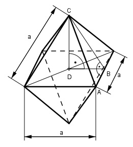

Aufgabe 214 Wie groß sind die Oberfläche O und das Volumen V eines Oktaeders mit Seitenlängen a von je 4,8 cm?

AC = a AB = a/2 BC = hs DC = h DB = a/2 Satz von Pythagoras im Dreieck ABC: AC2 = BC2 + (a/2)2 |-(a/2)2 a2 - (a/2)2 = hs2 a2 a2 - ---- = hs2 4 3 * a2 hs2 = --------- |√ 4 a 4,8 cm hs = --- * √3 = --------- * √3 = 4,16 cm 2 2 Satz von Pythagoras im Dreieck DBC: BC2 = DB2 + CD2 hs2 = (a/2)2 + h2 |-(a/2)2 h2 = 4,162 cm2 - 2,42 cm2 = 11,5456 cm2 |√ h = 3,4 cm 4,8 cm * 4,16 cm O = 8 * ------------------- = 79,9 cm2 2 4,82 cm2 * 3,4 cm V = 2 * ------------------- = 52,2 cm3 3